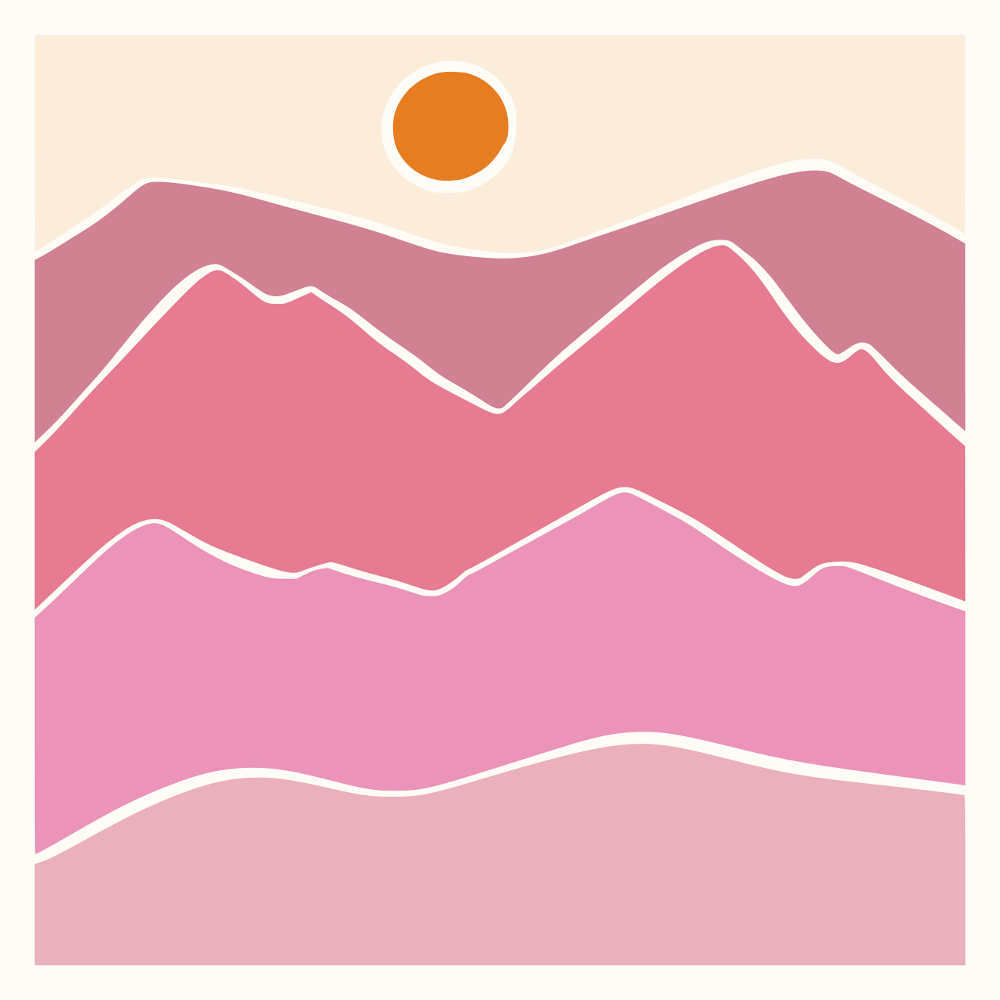

<!DOCTYPE html>
<html lang="en">

<head>
    <meta charset="UTF-8">
    <meta name="viewport" content="width=device-width, initial-scale=1.0">
    <title>Document</title>
    <style>
        .container {
            width: 100%;
            height: 100vh;
            background-color: white;
            display: flex;
            justify-content: center;
            align-items: center;
            flex-direction: column;
        }

        .line-1 {
            stroke: black;
            stroke-width: 10;
            stroke-dasharray: 10;
            stroke-dashoffset: 0;
            stroke-linecap: round;
        }

        .curved-line {
            /* position: absolute;
            top: 300px;
            left: 300px; */
        }


        .svg-logo {
            /* width: 100px; */
            height: 100px;
            animation: rotate 2s linear infinite;
        }

        @keyframes rotate {
            from {
                transform: rotate(0deg);
            }

            to {
                transform: rotate(360deg);
            }
        }
    </style>
</head>

<body>
    <!-- <svg width="100" height="100">
        <circle cx="50" cy="50" r="40" stroke="black" fill="transparent" stroke-width="5" stroke-dasharray="10,5" stroke-dashoffset="5" />
      </svg> -->


    <div class="container">

        <!--  -->

        <svg width="100%">
            <line class="line-1" x1="100" y1="100" x2="790" y2="100" />
        </svg>

        <!-- <svg class="curved-line" width="600" >
            <path d="m18.5,84.5c0,0 46,-50 184,-52c138,-2 201,49 200.5,48.5" fill="none" id="svg_4" stroke="#000000" stroke-width="5"/>
        </svg> -->


        <!-- ROTATING DASHED CIRCLE -->
         
        <svg class="svg-logo" viewBox="0 0 100 100">
            <circle cx="50" cy="50" r="40" stroke="black" fill="transparent" />
        </svg>
        <style>
            .svg-logo circle {
                fill: none;
                stroke: #000;
                stroke-width: 5;
                stroke-dasharray: 5;
                stroke-dashoffset: 32;
                /* animation: rotate 2s linear infinite; */
            }

            .svg-logo {
                /* width: 100px; */
                height: 100px;
                animation: rotate 2s linear infinite;
            }

            @keyframes rotate {
                from {
                    transform: rotate(0deg);
                }

                to {
                    transform: rotate(360deg);
                }
            }
        </style>


        <!-- DRAWING A CIRCLE ANIMATION ********************************************-->
        <svg class="svg-logo2" viewBox="0 0 100 100">
            <circle class="animated-circle" cx="50" cy="50" r="40" stroke="black" fill="transparent" />
        </svg>

        <style>
            .svg-logo2 {
                width: 100px;
            }

            .animated-circle {
                fill: none;
                stroke: #000;
                stroke-width: 5;
                stroke-dasharray: 250;
                /* Length of dash (circumference of the circle) C=2×3.1416×40 */
                stroke-dashoffset: 250;
                /* Start hidden */
                animation: dash 2s linear infinite;
            }

            @keyframes dash {
                from {
                    stroke-dashoffset: 250;
                    /* Fully hidden */
                }

                to {
                    stroke-dashoffset: 0;
                    /* Fully drawn */
                }
            }
        </style>


        <!-- Animated dashed line -->
        <style>
            body {
                background-color: #222;
                display: flex;
                justify-content: center;
                align-items: center;
                height: 100vh;
                margin: 0;
            }
    
            svg {
                width: 400px;
                height: 100px;
            }
    
            .dotted-line {
                fill: none;
                stroke: #00ffcc;
                stroke-width: 4;
                stroke-linecap: round;
                stroke-dasharray: 5, 10; /* Dotted pattern (dot, space) */
                stroke-dashoffset: 0;
                animation: moveDashes 2s linear infinite;
            }
    
            @keyframes moveDashes {
                from {
                    stroke-dashoffset: 0;
                }
                to {
                    stroke-dashoffset: -30; /* Moves the dashes */
                }
            }
        </style>

<svg viewBox="0 0 400 100">
    <line class="dotted-line" x1="20" y1="50" x2="380" y2="50"/>
</svg>
         

       


    </div>


</body>

</html>